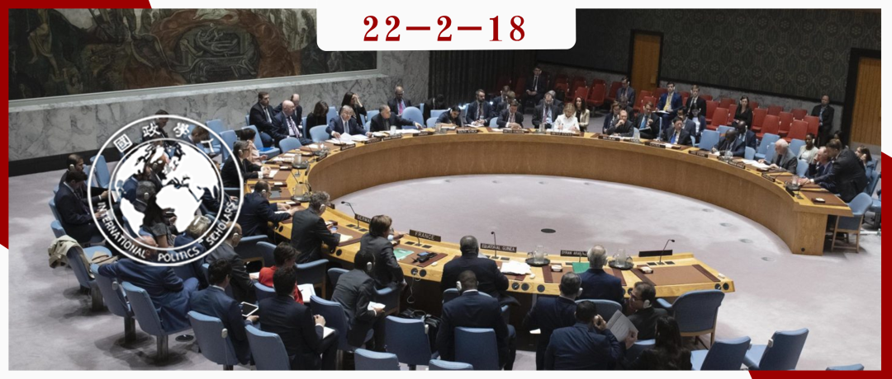

收录于合集

作品简介 ****
作者： Randolph B. Persaud，美利坚大学国际关系副教授。
编译： 杨紫茵（国政学人编译员，北京大学国际关系学院博士生）
来源： Randolph B. Persaud, Ideology, Socialization and Hegemony in Disciplinary International Relations, International Affairs , Vol. 98, No. 1, 2022, pp. 105-123.

导读
这篇文章认为国际关系学科中理论的构述是带有意识形态色彩的。长期以来，国际关系学科中有着西方重心的现象，而作者认为，这一现象使西方学者在学科中处于主导地位，西方学者提出的理论与观点本就意在为自由主义霸权秩序背书，与其所在国家战略利益相吻合。一方面，学者的思想会受到社会潜移默化的影响；另一方面，学者的思想也会受其社会化行为所影响。所以，学者通过“旋转门”直接参与到政策决策的行为也进一步强化了国际关系理论中的西方中心色彩。
这篇文章通过理论与案例的结合论述了国际关系学科中因社会化过程而形成的学术偏见。但是，纵观全球各地，学者间接或直接地都会影响到政策决策。国际政治学科的特质便是从社会现实中获得知识，所获得的知识又反之塑造社会现实。
摘要
本文认为国际关系学科不仅解释国际事务，更使大众和专业人士社会化和霸权化为一种意识形态世界观。这种世界观是与国家利益相一致的，支持着霸权自由主义下的世界经济和安全秩序。本文更多关注了早期英美国际关系理论之间的连续性，以及当代“学术- 外交政策-安全复合体”对霸权世界秩序的维护。本文论证了在国际事务中形成更强大的理论- 政策纽带的呼吁是多余的，因为美国领军学者同时也是政策制定者，无论是直接的还是通过如担任咨询顾问等其他渠道。其中，一些最为杰出的国际关系学者如迈克尔·多伊尔（Michael Doyle）、约翰·刘易斯·加迪斯（John Lewis Gaddis）、塞缪尔·亨廷顿（Samuel Huntington）、约翰·伊肯伯里（G. John Ikenberry）、斯蒂芬·克拉斯纳（Stephen Krasner）、西奥多·莫兰（Theodore H. Moran）、约瑟夫·奈（Joseph Nye）和安妮-玛丽·斯劳特（Anne-Marie Slaughter）都曾出任美国外交政策和安全机构的高层官员。本文也说明了早期英国国际关系理论化过程中，莱诺·柯蒂斯（Lionel Curtis）、阿尔弗雷德·齐默恩（Alfred Zimmern）和诺曼·安吉尔（Norman Angell）等学者也都是大英帝国坚定的捍卫者，尽管他们都使用了自由国际主义的话术。
编译
国际关系的大多数争辩都是关于认识论、本体论、方法论和理论，但是应当更多关注学科内的权力关系及其对知识生产的影响。本文关注国际关系学者生产的成果所带来的广泛社会影响，特别是理论、理论家、国家和政策之间的关系。作者选择使用国际关系学科（Disciplinary International Relations，DIR）作为一个符号有双重含义，一是指属于学术知识领域的知识体系，二是在福柯式话语当中所属的“规训”，即国际关系知识是被制度性权力所制约、塑造和限制，同样又在物质、政治和文化层次被运用、传播和反馈。所以，国际关系学科可以被视为是一种认识论统治（epistemological governance），即一种“嵌入式的制度、代理人和知识生产”。
本文超越理论，但会讨论与国际关系学科相关的理论家们。这些理论家是美国全球霸权的有机知识分子。国际关系学科理论家广泛定义和限定了辩论范围在于外交政策和国家安全。许多辩论都是发生在美国的大学当中。除了现实主义者、自由主义者和建构主义者之外几乎很少有其他理论家参与到辩论当中。国际关系学科可以说存在一种学科内部的理论垄断。国际关系理论事实上是霸权国家大战略的基本要素，以知识为外衣，为政策决策者、智库、精英报刊和零售新闻媒体提供谈资。国际关系学者还以公共知识分子的身份发挥作用，活跃于电视或节目上。除此以外，还有许多学者直接从事外交政策制定工作，把理论与战略相结合。
国际关系学科总是关注美国大战略，学者之间的辩论一直专注于保护或扩大美国（和西方）霸权的权力。邓肯·贝尔（Duncan Bell）甚至问道：“国际关系辩论对美国外交政策产生了什么影响？”本文提出三个论点。第一，作者认为理论的政策相关性部分与理论类型有关。因此本文主要关注所谓“主流”或“传统的”国际关系方法与理论，关注当中具有强烈政治和意识形态的内容，以及关于构建符合霸权国家利益的理论。第二，国际关系理论为国际现象提供了解释，但也发挥着重要的社会化作用。国际关系学科研究影响着精英和公众对外交政策和国际安全的理解，塑造了国内的世界观。伊塞克·卡莫拉（Isaac Kamola）认为，全球化是由特定行为体开发、传播和巩固的概念，其目标是为了使全球新自由主义成为可接受的全球政治经济“范式”。同样，在安全研究中，国际关系学者将关于霸权领导转化为世界秩序的无可争议的事实。软实力的概念也是如此。第三，在国际关系理论的构建中，种族和文明假设是与意识形态世界观相结合的。
01
知识生产和霸权社会化
虽然长期以来国际关系学科知识是具有意识形态的，但是他们的核心主张和观点变得世俗和“实用主义”是一个结构化问题，而非个人原因。
从安东尼奥·葛兰西（Antonio Gramsci）、路易斯·阿尔都塞（Louis Althusser）到大卫·坎贝尔（David Campbell），批判思想家都探讨了思想和世界观如何从意识形态行为中诞生，并且被传播和制度化。葛兰西和阿尔都塞都认为，自由主义或资本主义民主的基本价值观是受到统治阶级的核心价值和价值观所影响的。两人都强调教育在塑造大众观念的作用。对葛兰西来说，行为和理论之间没有区别。坎贝尔则关注内嵌或知识的社会化。坎贝尔的外交政策分析解释了政治身份是如何通过把“他者”描述为危险从而塑造的。
作者认为，国际关系理论不仅是解释的，而且是意识形态行为，他们旨在赋予主导国家霸权行为物质层面的合法性。也有充分的证据表明，理论化深化了对西方的挑战，特别是对美国或英国的霸权挑战。
02
理论、政策和目的
一直以来都有关于国际关系理论与政策制定之间关系的讨论。其中一种构述这个议题的常见方式是理论与政策之间存在差距。如约瑟夫·奈（Joseph Nye）所说，这种差距正在不断扩大。然而，作者认为要求加大理论与政策之间的联系是多余的，因为大多数国际关系理论家都已经与国家安全和外交政策制定有所联系。约瑟夫·奈（Joseph Nye）、斯蒂芬·沃尔特（Stephen Walt）以及其他希望弥合这一鸿沟的人忽视了一个事实，就是许多重要的理论家本身就是政策制定者或顾问，本就内嵌于政策制定的过程当中。作者认为，所有关于理论与政策关系的讨论都是内部讨论，所有的大战略家都假定了一个美国主导的世界秩序，尽管不是完全占主导。进攻性和防御性现实主义的辩论，或者自由制度主义与新古典现实主义之间的辩论，其实都可以被视为“家庭纷争”。
关于政策与理论鸿沟的最大问题是大部分有影响力的学者都直接参与到政策制定当中。斯蒂芬·克拉斯纳（Stephen Krasner）、约瑟夫·奈（Joseph Nye）、迈克尔·多伊尔（Michael Doyle）、约翰·伊肯伯里（John Ikenberry）、塞缪尔·亨廷顿（Samuel Huntington）和约翰·鲁杰（John Ruggie）都曾担任高官，在其位塑造了政策环境，也有能力制定政策。除此以外还有罗伯特·杰维斯（Robert Jervis）、肯尼斯·沃尔特（Kenneth Waltz）、布鲁斯·布尔诺·德·梅斯奎塔（Bruce Bueno de Mesquita）、布鲁斯·拉西特（Bruce Russett）和汉斯·摩根索（Hans Morgenthau）、格雷厄姆·艾利森（Graham Allison）、罗伯特·艾特（Robert Art）、理查德·贝茨（Richard Betts）、伊利奥·柯汉（Eliot A. Cohen）、迈克尔·多兰（Michael Doran）、理查德·冯博（Richard Feinberg）、詹姆斯·戈德杰（James Goldgeier）和理查德·赫曼（Richard Hermann）等等。当中还尚未包括弗朗西斯·福山（Francis Fukuyama）或亨利·基辛格（Henry Kissinger）等，这些学者虽然在国际事务中具有影响力，但不真正属于国际关系学科。帕克斯和斯特恩发现，曾于1980年至2008年间在12份国际关系期刊中发表过两篇的445名学者中有65名曾短暂中断过他们的学术道路，接受政府或国际组织的全职工作。根据2008年教学、研究和国际政策（TRIP）问卷调查发现，有23%的国际关系学者曾出任过政府的付薪顾问，28%也出任过无薪顾问。有43%支持“弥合政策与理论差异”的学者表明他们“曾为政府、国际组织、非政府组织、智库、利益集团或私人部门服务”。
在英国，国际关系成为一门学科的发展过程也与治理大英帝国有密切联系。早期国际关系学是在达尔文主义和科学种族主义与帝国主义和殖民主义相关联的时代出现的。英国国际关系学者如莱诺·柯蒂斯（Lionel Curtis）、阿尔弗雷德·齐默恩（Alfred Zimmern）、菲利普·科尔（Philip Kerr）、爱德华·格雷格（Edward Grigg）、拉姆齐·缪尔（Ramsay Muir）和罗伯特·亨利·布兰德（Robert Henry Brand），都在理论或者国际事务出版物中支持了帝国的理论。第一次世界大战期间，保卫帝国的理论需求加大，具有帝国主义倾向的学者们都站了出来。自然科学相关的机构也都在致力于解决殖民问题。自然科学和社会科学和“殖民”的发展是相关的。
以上说明了国际关系理论与政策制定之间所谓的“鸿沟”是一个不准确的认知。不仅许多国际关系学者都曾在政策制定的环境中工作，而且许多帝国的支持者和战略思想家都是学科中的著名学者。在英国，早期国际关系学科与保护大英帝国利益的战略其实是一枚硬币的两面。在美国，“美式和平”下的霸权自由国际秩序不仅是由国际关系学界提出的，而且还被同一批学者所操纵。
03
1945年后国际关系学科的社会化
托马斯·巴奈特（Thomas Barnett）的研究成果展现了把国际关系学科解释和政策或激进的意识形态宣传分开是不可能的。巴奈特为全球化和世界秩序的管理制定了新规则集（New Rules Sets）。美国不仅是功能核心地区的领导者，更是成功全球化的“源代码”。关于“全球化十诫”的相互关系就是“没有稳定，就没有市场；没有增长，就没有稳定；没有规则就没有钱；没有安全，就没有规则；没有利维坦，就没有安全；没有美国人的意志，就没有利维坦。理论分析和政策提出的核心大战略不是可选的，而是有点像康德的绝对命令式的。巴奈特认为：“唯一真正值得创造的全球未来无非是完全消除差距。美国只有在扩大链结程度或者全球化范围时才能增加其安全性。”巴奈特向“国家安全委员会、国会、国务院和国土安全部”都提交了他的“简报”，这些部门官员都是巴奈特关于消除差距概念的“消费者”。巴奈特所做的就是将亨廷顿的“文明冲突”和奈的“软实力”结合成一个全面的国家安全学说。如果必须让被征服者接受西方生活方式的教育，那么核心功能区的群众必须要扮演好全球公民的角色，向世界展现他们的核心价值观。这些想法，其实也曾在新现实主义、新自由制度主义、实证建构主义等理论中提及。
邓肯·贝尔（Duncan Bell）很清楚，“现代化理论塑造了人们对过去的‘第三世界’的态度和政策，以及对越南的政治军事战略。康德认为，历史进步不是关乎幸福，而是关于人类发展，西方对此负有责任。麦考利确信，最好的策略是在印度形成阶级，是我们与我们所统治的数百万人之间的翻译——在血统和肤色上是印度人，但在品味、想法、道德和智力方面却与英国人相等”。而巴奈特的“新规则集”对这一想法几乎没有改变。这就是西方需要拯救非西方人类，如果不通过教育，就通过武装干预。
04
总结
作者总结了三个方面，第一，尽管对国际关系理论的一般印象是脱离实际、与政策脱节的，但本文表明国际关系学科的实体与政策制定间接相关，而且学术界和国家外交政策也是通过学术界/战略家的旋转门直接联系起来的。
第二，尽管早期国际关系著作的许多种族基础已然消失，但是关于文明的主流假定仍然内嵌于国际关系学科之中。这些假定在民主扩张、捍卫自由免受威胁扩散和国际发展的理论中将反复出现。
第三，国际关系学科中理论与政策的纽带与较早前关于世界秩序治理的辩论有较强联系。许多学科中的核心主张，例如推广民主、善政和安全也都是早期英国帝国主义国际关系的教条和美国种族主义国际关系的教条。区别在于，从前帝国主义国际关系公然以西方文明至上的话语作宣传，而如今理论家们以全球世界主义来进一步修饰他们的观点，用一种共同人文话语分享在和平、安全和发展的共同利益。
世界变了，学者的学科敏感性和观点也变了，但是有些依然没变。精英仍主导着安全话语。国际关系学科的国家中心主义及其新实证主义倾向消除了所有形式的批判理论。但是，少数西方国家近乎教条般坚称已经为全人类找到一条通往光荣未来的道路，无关种族、阶级、文化和历史。由此来看，新旧国际关系之间有着千丝万缕的联系。
词汇整理
国际关系学科 Disciplinary International Relations
学术界/战略家旋转门 **** A revolving door of academics/strategists
审校 | 罗洁 胡瑞琨
排版 | 柴昕彤 臧泽华
文章观点不代表本平台观点，本平台评译分享的文章均出于专业学习之用, 不以任何盈利为目的，内容主要呈现对原文的介绍，原文内容请通过各高校购买的数据库自行下载。

国政学人
支持学术公益与知识传播
微信扫一扫赞赏作者 __赞赏
已喜欢，对作者说句悄悄话
取消 __
发送给作者
发送
最多40字，当前共字
上一页 1/3 下一页
长按二维码向我转账
支持学术公益与知识传播
受苹果公司新规定影响，微信 iOS 版的赞赏功能被关闭，可通过二维码转账支持公众号。